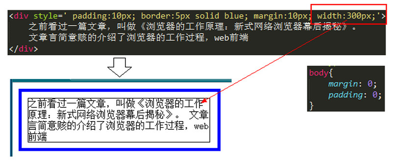
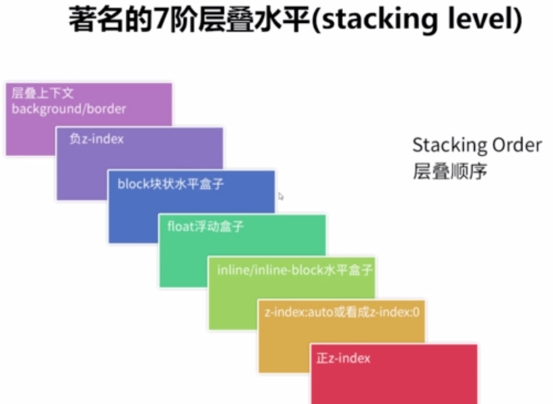
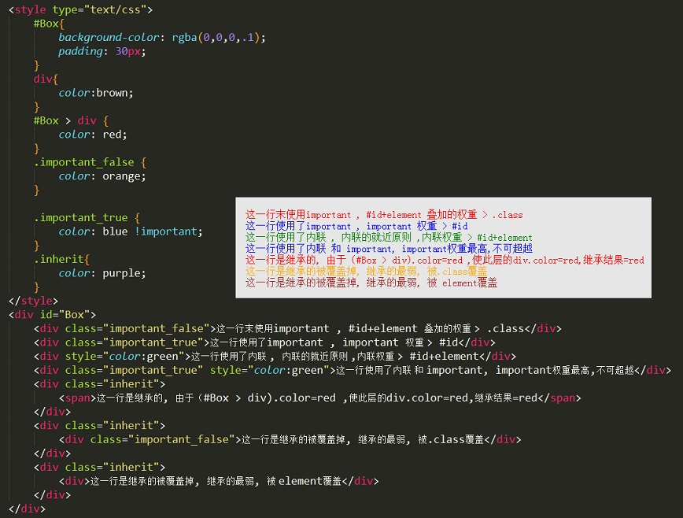

-
1. 盒子模型
-
1.1. 元素的分类
块级元素 -- 在html中
<div>、<p>、<h>、<ul>、<li>、<form>就是块级元素块级元素特点：
1、每个块级元素都从新的一行开始，并且其后的元素也另起一行。（真霸道，一个块级元素独占一行）
2、元素的高度、宽度、行高以及顶和底边距都可设置。
3、元素宽度在不设置的情况下，是它本身父容器的100%（和父元素的宽度一致），除非设定一个宽度。
内联元素 -- 在html中，
<span>、<a>、<label>、<strong>、<em>、就是典型的内联元素（行内元素）（inline）元素。内联元素特点：
1、和其他元素都在一行上；
2、元素的高度、宽度及顶部和底部边距不可设置；margin padding 可用
3、元素的宽度就是它包含的文字或图片的宽度，不可改变。 内联块状元素
内联块状元素 --
<img><input>标签就是这种内联块状标签。同时具备内联元素、块状元素的特点 元素特点：
1、和其他元素都在一行上；
2、元素的高度、宽度、行高以及顶和底边距都可设置。
-
1.2. 盒子模型
盒子模型--由内向外依次是 content, padding, border, margin
盒子模型的高度和宽度的计算:(此处只考虑标准文档流)
1. 在盒子模型中，我们设置的宽度都是 内容宽度(width:300px)，不是整个盒子的宽度。
2. 而整个盒子的宽度是：（内容宽度 + border宽度 + padding宽度 + margin宽度）之和。
3. 下面会讲到盒子宽度的计算 那么，就会出现一个问题：如果父容器宽度不变，我们手动增大margin、border或padding其中一项的宽度值，都会导致内容宽度的减少。
极端情况下，如果内容的宽度压缩到不能再压缩了（例如一个字的宽度），那么浏览器会强迫增加父容器的宽度。这不是我们想要看到的。box-sizing :
box-sizing：content-box | border-box 默认值：content-box
content-box： padding和border不被包含在定义的width和height之内。
对象的实际宽度等于设置的width值和border、padding之和，即 ( Element width = width + border + padding) 此属性表现为标准模式下的盒模型。border-box： padding和border被包含在定义的width和height之内。
对象的实际宽度就等于设置的width值，即使定义有border和padding也不会改变对象的实际宽度，即( Element width = width )纵向margin的重叠(塌陷) :
margin属性在纵向相遇时,会出现塌陷,或者叫吃掉的现象.表现行为:
margin值相同 --> 距离为一个margin值, 吃掉一个margin值
margin值不同 --> 距离为margin较大者, 大的margin值吃掉小的margin值 -
1.3. js jquery获取元素高度、宽度的方式
js方式 :
element.offsetWidth | element.offsetHeight = content + padding + border
jquery方式 :
$(element).height() | $(element).width() = content
$(element).innerHeight() | $(element).innerWidth() = content + padding
$(element).outerHeight() | $(element).outerWidth() = content + padding + border
$(element).outerHeight(true) | $(element).outerWidth(true) = content + padding + border + margin
-
-
2. 布局、定位、浮动
-
2.1. position的四种方式
static | relative | absolute | fixed
static 默认值
在恢复默认定位时,或控制标准定位时使用
relative 的特点
1. 仍处于标准文档流
2. 相对于自身原有的位置进行定位偏移
3. 获得偏移量 和 z-index属性
重点解释
1. 不会脱离标准文档流: 即在元素出现的位置出现,并相对这个位置作为基准偏移
2. 当未设置偏移量:元素仍处于原位置,其后面的元素无影响,但此元素获得z-index属性
3. 当设置偏移量:元素获得z-index属性,并相对其原位置偏移,浮于标准文档流上方,页面中保留该元素的占位absolute 的特点
1. 完全脱离标准文档流
2. 相对于距离最近的已定位的祖先元素进行定位偏移
3. 获得偏移属性 和 z-index属性
重点解释
1. 脱离文档流: 即是其后面出现的元素会替代其出现的位置表现,当前元素会浮于文档流上方,即获得z-index属性
2. 当未设置偏移量:无论是否存在已定位的祖先元素,都会保持元素初始的位置定位,脱离文档流,获得z-index属性
3. 当设置偏移量: a.不存在定位的祖先元素,以html标签作为基准定位
b. 存在定位的祖先元素,以距离其最近的祖先元素作为基准定位fixed 的特点
1. 完全脱离标准文档流
2. 无论是否有祖先元素，均以浏览器可视窗口进行定位偏移
3. 获得偏移属性 和 z-index属性
重点解释 -- 与absolute的区别
1. 始终以浏览器可视窗口定位,不会跟随滚动条滚动，滑出屏幕
2. 当出现滚动条时,文档流中的z-index值小于该元素的元素会从该元素下方穿过 -
2.2. 浮动
浮动产生的原因： 一般是一个盒子里使用了CSS float浮动属性，导致父级对象盒子不能被撑开，这样CSS float浮动就产生了。 浮动会使当前标签产生向上浮的效果，同时会影响到前后标签、父级标签的位置及 width height 属性
清除浮动的几种方式
1. 设置父级div的height(不推荐，除非固定height值)
2. 子元素结尾处加空div标签 clear:both(不推荐，增加无意义标签)
3. 父级div定义 伪类:after 和 zoom
.clearfloat:after{ display:block; clear:both; content:""; visibility:hidden; height:0; } //ie8+才支持after伪类 .clearfloat{ zoom:1 } //zoom(IE转有属性)可解决ie6,ie7浮动问题4. 父级div定义 overflow:hidden 和 width 的值 (不能和position配合使用，因为超出的尺寸的会被隐藏)
5. 父级div定义 overflow:auto 和 width 的值 (不推荐使用，内部宽高超过父级div时，会出现滚动条)
-
2.3. z-index
重要概念
层叠上下文相对于文档流中的普通元素而言,层叠上下文元素指获得z轴属性,即浮于普通元素上方并获得层叠顺序规则的限制
重要规则
 1 . backgroud/border | block块状盒子 | float浮动盒子 | inline/inline-block盒子 属于普通元素级别
2 . 负z-index | z-index:auto/z-index:0/不依赖z-inde的层叠上下文 | 正z-index 属于获得层叠上下文属性的元素级别
3 . 定位元素(position:relative | absolute | fixed) z-index就是默认的auto级
层叠准则
a . 谁大谁上：当具有明显的层叠水平标示的时候，如识别的z-indx值，在同一个层叠上下文领域(兄弟节点)，层叠水平值大的那一个覆盖小的那一个。
b . 后来居上：当元素的层叠水平一致、层叠顺序相同的时候(兄弟节点)，在DOM流中处于后面的元素会覆盖前面的元素。
c . 子承父业：层叠上下文可以嵌套，内部层叠上下文及其所有子元素均受制于外部的层叠上下文。获取层叠上下文属性的方式
1 ) . position定位 relative | absolute | fixed 对于包含有position:relative/position:absolute的定位元素， 以及FireFox/IE浏览器（不包括Chrome等webkit内核浏览器） （目前，也就是2016年初是这样）下含有position:fixed声明的定位元素， 当其z-index值不是auto的时候，会创建层叠上下文. 而z-index一旦变成数值，哪怕是0，都会创建一个层叠上下文。
2 ) . z-index值不为auto的flex项(父元素display:flex|inline-flex).
3 ) . 元素的opacity值不是1.
4 ) . 元素的transform值不是none.
5 ) . 元素mix-blend-mode值不是normal.
6 ) . 元素的filter值不是none.
7 ) . 元素的isolation值是isolate.
8 ) . will-change指定的属性值为上面任意一个。
9 ) . 元素的-webkit-overflow-scrolling设为touch.
z-index 相关参考 深入理解CSS中的层叠上下文和层叠顺序--张鑫旭
-
-
3. 样式表、选择器
-
3.1. 样式表方式及优先级
样式表的三种方法
内联式 (style="") 、 嵌入式 (< style type="text/css"><"/style>) 、 外部式 (<link rel="" type="text/css" href="" />)
样式表的优先级
就近原则（离被设置元素越近优先级别越高）。因此 --> 内联式 > 嵌入式 、 外部式
-
3.2. 选择器的方式及优先级
css选择器
标签选择器 、 类选择器 、 ID选择器
选择的优先级
ID选择器 > 类选择器 > 标签选择器
重要提示
1 ) . 选择器的权重 --> 标签选择器 elememt=1; 类选择器 .class=10; ID选择器 #id=100 选择器的权重是可以叠加的
2 ) . 样式表是可以继承的，继承来的权重最低。 不可继承的样式：基本属于盒子模型的属性不能被继承。
display、margin、border、padding、background、height、width 、overflow、position、left、right、top、bottom、z-index、float、clear、3 ) . !important 权重是最高的,无法超越的
4 ) . 层叠样式表,层叠的概念 : 即权重相同的情况下，后面出现的样式覆盖前面出现的样式
样式的优先级排序(由大到小)
!important > 内联的 > #id > .class > element > 继承的

-
-
4. 事件 event
-
5. 闭包
-
6. 继承 类对象
-
7. 异步请求 ajax
-
8. 其他
-
CSS hack
.bb{ background-color:#f1ee18;/*所有识别*/ .background-color:#00deff\9; /*IE6、7、8识别*/ +background-color:#a200ff;/*IE6、7识别*/ _background-color:#1e0bd1;/*IE6识别*/ } -
普通元素居中,定位元素的居中
普通元素居中： margin-left: auto; margin-right: auto
定位元素居中: left:50%; margin-left:(-width/2)px
-
正则表达式
-